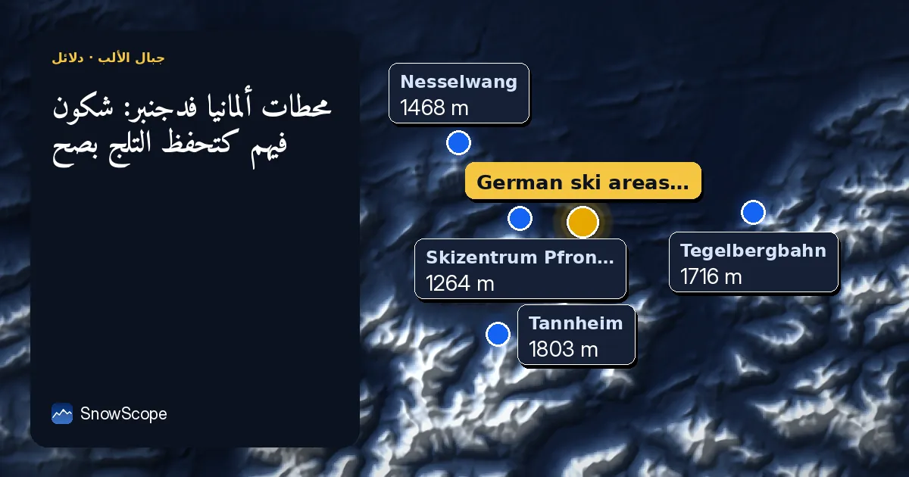

محطات ألمانيا فدجنبر: شكون فيهم كتحفظ التلج بصح
فسيمانة عادية فمنتصف دجنبر، واحد غير اثنين من سبعة محطات ألمانية كنشوفوهم كاين فيهم التلج عمقو بحال يخليك تتزلج بشكل آمن فأغلب الشتوات: القمة ديال Zugspitze على الجليد، و الجهة الفوقانية ديال Fellhorn فوق Oberstdorf. اللي بقاو هما أرخص باش تزور لاكن التلج كاين بيهم أقل بزاف، خاصة فالقاعدة ديال المحطات.
شوف توقعات التلج مباشرة ديال German ski areas in December فالتطبيق ديال SnowScopeالعلو ديال التلج، التنبيهات والخريطة 3D، فابور.
فين التلج موثوق
بحدود 15 دجنبر، القمة ديال Zugspitze (2627 م) كاين فيها 30 سم أو أكثر فتقريبا كل شتوة—100 % من 46 شتوة ديال المعطيات. فالوسط ديال الجبل (1811 م) كاتوصل لهاد العمق فـ 89 % ديال الشتوات. Fellhorn/Kanzelwand فوق Oberstdorf كايقول حيتا واحد مختلف: 93 % ديال الشتوات كاين فيها 30 سم فالقمة (1965 م)، بلاكن غير 59 % فالوسط (1441 م).
Garmisch-Classic كاتقف فالوسط: 89 % فالقمة (2047 م) لاكن كايقل لـ 48 % فالوسط (1387 م). كيما تروح للمحطات البافارية الصغيرة، شانس التلج فالوسط كايقل بشكل كبير. Sudelfeld كايوصل 39 % في 1186 م، Brauneck غير 28 % في 1154 م، و Oberjoch 28 % في 1342 م. Feldberg فـ Black Forest كاتقع بالجانب: 17 % فالوسط (1189 م) و غير 24 % فالقمة (1446 م).

شنو الثمن فاليوم
التلاتة محطات الجليد والجبلية كايقابل الواحد الآخر تقريبا: Zugspitze 70.50 يورو أونلاين، Garmisch-Classic 69 يورو، و Fellhorn/Kanzelwand 72.90 يورو. البيست الصغيرة كاتقل الثمن: Sudelfeld، Brauneck و Oberjoch دابا كول واحد كاتاخد 55 يورو فاليوم. Feldberg كاتستعمل التسعير حسب الطلب، بحال التمن كايتبدل مع الطلب.
إذا قاعدت ستة أيام، منطقة Oberstdorf (Fellhorn و Kanzelwand) كاتقدم 344.50 يورو فـ Advent (لحد 20 دجنبر)، أرخص من 382.80 يورو اللي كايقل سنة كاملة. Oberjoch كاتباع ستة أيام ب 278 يورو. Sudelfeld و Brauneck كايشاركو باص واحد ب 208 يورو اللي كاتغطي أربعة أيام تزلج فـ ستة أيام تقويم. لا Zugspitze ولا Garmisch-Classic كاتباعو باص ستة أيام.
الفخ ديال التلج الخفيف
المحطات اللي تحت كايجيبو خطرة ديال التوقيت. القاعدة ديال Brauneck (715 م) كاتوسط 9 سم في 15 دجنبر؛ القاعدة ديال Sudelfeld (865 م) كاتحتفظ ب 15 سم. لا واحد منهما ما شاف 30 سم في سيمانة واحدة ديال الميلاد فكول التاريخ ديال المعطيات. Feldberg، بحال كانت عالية، حتى أضيق: 4 سم فالقاعدة و غير 8 سم فالقمة (1446 م) في يوم عادي من منتصف دجنبر.
هاد ما هوما محطات ديال التزلج السيئة. هوما التزامات سيئة ديال دجنبر. مع تذكرة 55 يورو ليوم واحد و ساعة ديال المسير من ميونيخ، كاتشتغل غير بعد تلج جديد. شوف الخريطة ديال SnowScope و التقارير اليومية ديال كل محطة باش تقرر فـ الصباح، أو اليوم اللي قبل، واش غادي تروح أو لا.
القيمة عبر الشهر
Zugspitze كاتربح في القيمة: التمن تقريبا واحد، لاكن التلج اللي كايجي كل سنة بحدود منتصف دجنبر. خصم Advent ديال Fellhorn/Kanzelwand (344.50 يورو ستة أيام) كاتخليها تنافسية إذا كان عندك سيمانة تقضيها و كاتستعمل الباص اللي مربوط في Oberstdorf و Kleinwalsertal.
ليوم واحد في الشتوة، الفرق بين الموثوق و الخطير كايستاهل الأيورو اللي تضيف. احجز Zugspitze أونلاين و غادي تتزلج. استنيا توقعة ديال الثلج و قامر على Sudelfeld أو Oberjoch، و ممكن تضيع البنزين و يوم واحد من الخدمة.
سيمانة الميلاد كاتبان أحسن
الشانس كاتتحسن كيما دجنبر كايجري. في سيمانة الميلاد (22-28 دجنبر)، الوسط ديال Zugspitze كايطيح لـ 96 % شانس ديال 30 سم، و الوسط ديال Garmisch-Classic كايطيح لـ 61 %. حتى Brauneck و Sudelfeld كاتتحسنو لـ 37-39 % فالوسط. Feldberg، بلاكن، كايقع ضعيف: 24 % فالقمة.
إذا كنت مرن، ؤخر الرحلة ديالك لحد سيمانة الميلاد. إذا كان غير واحد فمنتصف دجنبر، روح للعالي: البيست العليا ديال Zugspitze، Fellhorn أو Garmisch-Classic كاتحتفظ بالتلج كيما البيست اللي تحت ما كاتحتفظوش.
نصايح للي كيتزلجو
- يوم واحد في منتصف دجنبر: احجز Zugspitze أونلاين؛ الموديون كاتقد فوق السحاب و التلج تقريبا دابا كايقد غزير.
- سيمانة ديال دجنبر: خذ باص Oberstdorf Advent (Fellhorn و Kanzelwand) و تزلج فالبيست العليا؛ أرضيات الوادي أرق بلاكن الأوسط و القمم كاتعطيو التلج.
- جبال البافاريا قبل الألب و Black Forest: زور غير بعد عاصفة أو في سيمانة الميلاد؛ شوف الخريطة ديال التلج قبل ما تطيح من الدار.
- إذا رحت خارج البيست، قرا النشرة ديال الانهيارات البافارية، خاصة في التضاريس المكشوفة ديال Zugspitze اللي فيها الريح و التلج الخفيف كاتخبي الصخور.
- تجنب دجنبر بالكامل في Feldberg إلا إذا عاصفة كبيرة غادي تقد؛ فأغلب السنين الغطاء ما موثوق لحد يناير.
على هاد الأرقام
العلو ديال التلج فالمحطات هو أكثر تلج فالجهة الفوقانية فالتاريخ المكتوب؛ هادو تقديرات لمنطقة، ماشي قياس فنقطة وحدة. التوقعات يمكن تتبدل. ديما شوف النشرة الرسمية ديال الانهيارات قبل ما تخرج من البيست.
كيفاش تستاشهد بهاد المقال
للبحث، التعليم ولا الصحافة: الأرقام والرسومات تقدر تعاود تخدم بيهم بحرية تحت CC BY 4.0 مع هاد الاستشهاد.
SnowScope (2026), محطات ألمانيا فدجنبر: شكون فيهم كتحفظ التلج بصح, https://snowscope.app/blog/ar/2026/11/germany-ski-areas-december-which-hold-snow.html, تشاف ف 2026-11-14
SnowScope (Atlas Labs). (2026, November 14). محطات ألمانيا فدجنبر: شكون فيهم كتحفظ التلج بصح. SnowScope snow reports. https://snowscope.app/blog/ar/2026/11/germany-ski-areas-december-which-hold-snow.html
BibTeX
@misc{snowscope2026germanyskiareasdecemberw,
author = {{SnowScope (Atlas Labs)}},
title = {محطات ألمانيا فدجنبر: شكون فيهم كتحفظ التلج بصح},
year = {2026},
month = nov,
howpublished = {\url{https://snowscope.app/blog/ar/2026/11/germany-ski-areas-december-which-hold-snow.html}},
note = {Published 2026-11-14 14:24 UTC; accessed 2026-11-14}
}· CC BY 4.0 · الطريقة، الداتا والأدوات →
تابع German ski areas in December
فابور: ميساج ملي يجي التلج، والتوقعات كل صباح.